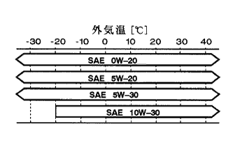

Each part of the fats and fats and cooling solution specified oils and fats and capacity |
|  |
| Engine model | Only oil replacement filling amount [L] | Filling amount when replacing oil and oil filter [L] |
|---|---|---|
| 1NZ-FE | 3.4 | 3.7 |
| 2NZ-FE | 3.4 | 3.7 |
Gasoline engine oil (designated oils and fats)
| Product name | Quality grade | Viscosity grade |
|---|---|---|
| Toyota genuine motor oil | API SM, EC/ILSAC GF-4 | SAE 0W-20 |
| Toyota genuine motor oil | API SM, EC/ILSAC GF-4 | SAE 5W-30 |
| Toyota genuine motor oil | API SM, EC/ILSAC GF-4 | SAE 10W-30 |
| Toyota genuine motor oil | API SL, EC | SAE 5W-20 |
| Toyota genuine motor oil | API SL, EC | SAE 10W-30 |
| Items [model] | Capacity [L] (Reference value) | Designated oil |
|---|---|---|
| Cooling solution [2NZ-FE] | 4.4 | Toyota Genuine Super Long Life Quark Lantan |
| Cooling solution [1NZ-FE] | 4.3 | ↑ |
| Automatic Transx Axleflood [U441E] | 5.6 (Differency including) | Toyota Genuine O-TOFR-DOPTIP T-IV |
| Automatic Transx Axleflood [U340E] | 6.8 (Differency including) | ↑ |
| Automatic Transx Axleflood [U340F] | 6.9 (Differency including) | ↑ |
| Transfer oil [MF1A] | 0.9 | Toyota genuine gear oils (API GL-5, SAE 75W-90) |
| Rear dialogue oil | 1.7 | Toyota genuine high pooid gear oil SX (API GL-5, SAE 85W-90) |
| Power -steering full | 0.7 | Toyota genuine power -steering full |
| Brequid | - | Toyota Genuine Blamvil 2500H |
| A/C compressor oil | - | ND-Oil8 |